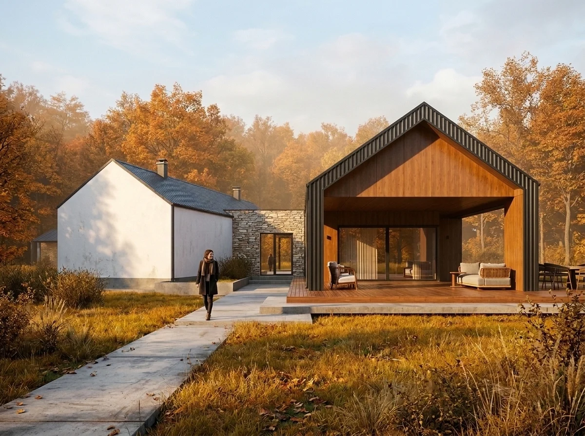
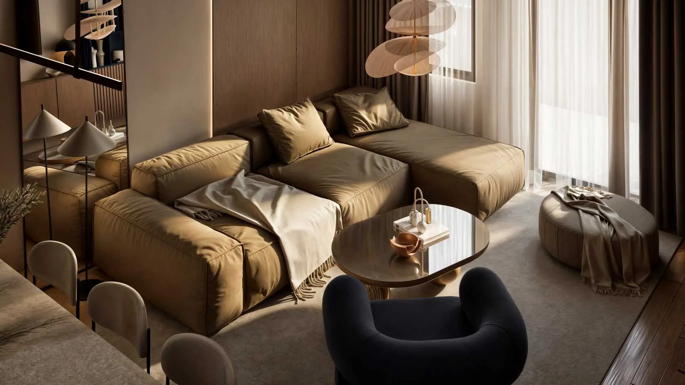
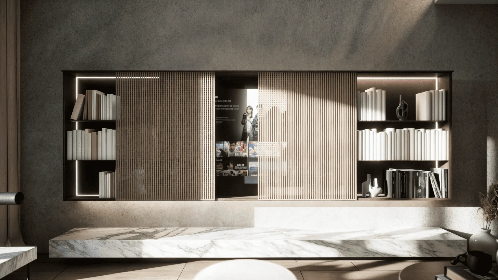
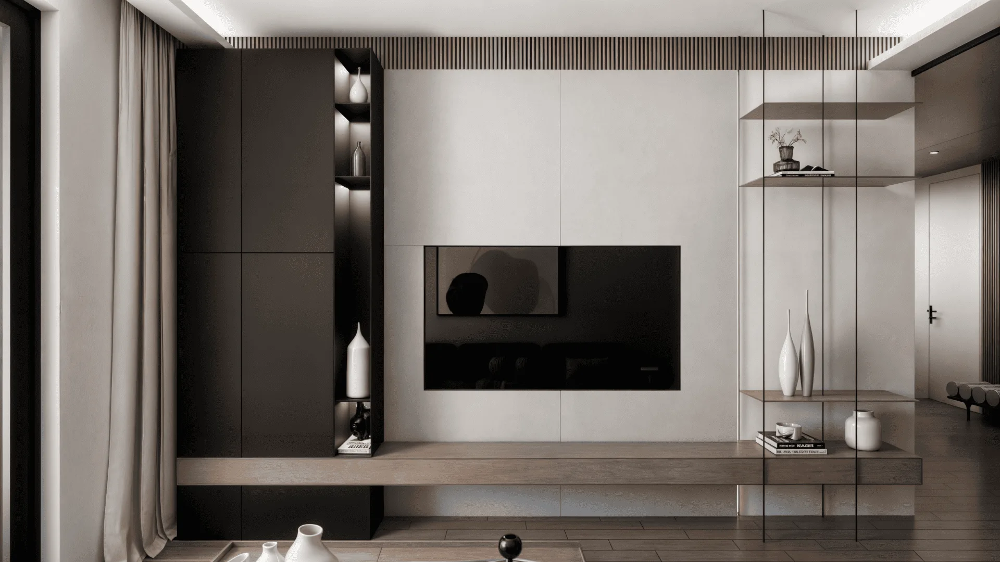

Selected from 150+ projects / 15 shown
Selected work
Houses, apartments, clinics and hospitality spaces in Serbia and Montenegro: completed, under construction and in preparation. The status of each project is on its page.
No projects match your search.

Event venue and restaurant

Event center with basketball court and apartments

Residential, villas

Residential, villas

Residential and commercial building

Cafe interior

Town masterplan

Residential, house

Residential interior

Healthcare interior

Hospitality interior

Residential interior

Residential interior

Residential interior

Residential interior
01Event Center, TrnavaConceptual & Schematic Design +4202602Celtics Event Center, BostonConceptual & Schematic Design +2202303Villa Dve Koraćica, KosmajConceptual & Schematic Design +2202604Villa Duo, DivčibareConceptual & Schematic Design +4202505Liman 2, UlcinjConceptual & Schematic Design +2201906Cafe, Frankfurt am MainInterior Architecture & Custom Detailing +1202407Koroba Restoration MasterplanConceptual & Schematic Design +2201808Private Villa BC 3721Conceptual & Schematic Design +3202409Apartment PB/23 MBConceptual & Schematic Design +4202410Clinic ZTBDesign Development & 3D Modeling +3202411Caffe Spass, BelgradeConceptual & Schematic Design +4202412Apartment Sakura 2/24Design Development & 3D Modeling +3202313Apartment Sakura 1/24Design Development & 3D Modeling +3202314Belgrade Waterfront Apartment 2/B/64Conceptual & Schematic Design +3202415Apartment KM 4/18Construction Documents & Engineering +22024